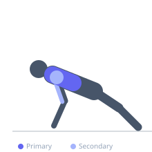

Exercise guide / Gymnastic Ring Push-Up
Gymnastic Ring Push-Up
The gymnastic ring push-up is a bodyweight pushing exercise performed with the hands gripping suspended rings, adding significant instability that dramatically increases pectoral, serratus anterior, and stabilizer muscle activation compared to floor push-ups. The rings also allow the wrists to rotate naturally, reducing joint stress and enabling a more natural pressing path.
Primary muscles
pectoralis major sternal
pectoralis major clavicular
Secondary muscles
deltoid anterior
triceps lateral head
pectoralis minor
Stabilizers
transverse abdominis
supraspinatus
Equipment
Gymnastic Rings
Optional
Suspension Trainer (TRX-style)


Starting position
- Set the rings at a low height above the floor. Grip the rings and assume a push-up position with arms extended, body in a straight line.
Setup
- Adjust ring height so the hands are at the same height as a floor push-up starting position. Lower rings = harder. Feet elevated = harder still.
Steps
- Step 1: Grip the rings and walk out into a plank position, arms straight.
- Step 2: Slowly lower the chest toward the rings by bending the elbows, keeping them from flaring wide.
- Step 3: At the bottom, press through the rings and extend the arms while actively turning the rings outward (rings turn from neutral to overhand at the top).
- Step 4: At full extension, squeeze the chest and externally rotate the rings for a strong peak contraction.
- Step 5: Lower smoothly into the next rep.
Coaching cues
- Turn the rings out at the top like you're trying to show your thumbs to the ceiling
- Control the rings — don't let them control you
- Tight body from heels to crown
Breathing
- Inhale as you lower. Exhale as you press up and rotate the rings.
Range of motion
- Full depth to 90 degrees elbow flexion or below. Full lockout at the top with external ring rotation.
Tempo
- 3-1-2-0
Common mistakes
- Allowing the rings to drift far out to the sides, losing stability
- Not turning the rings outward at the top — this reduces pec activation
- Setting the rings too low without adequate strength
Safety
- Establish solid floor push-up form before progressing to rings
- Adjust ring height to begin — higher rings = less body weight on arms
- Ensure ring straps and anchor point can support bodyweight
Training
- strength: 5–10 reps
- hypertrophy: 8–15 reps
- strength: 3–5 sets
- hypertrophy: 3–4 sets
- Rest: {'strength': 120, 'hypertrophy': 90}